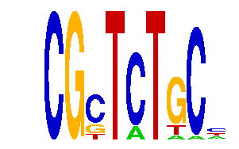

family_14 |
|---|
|  |
| Download PWM |
| Download instances (motifs) |
| Show motif distribution |
Query_ID | Query_Consensus | Subject_Name | Source_DB | Subject_ID | Length | Orientation | Offset | Divergence | Overlap | Subject_Consensus |
|---|
Sequence | Start_position (from start) | Start_position (from end) | Average conservation | Best conservation score | Instance_with_best_CS | Best_Z-score | Instance_with_best_ZS | Strand |
|---|---|---|---|---|---|---|---|---|
| chr2:17378003-17379003 | 643 | 652 | 0.00433333 | 0.011 | CGYTMTGC. | 12.396862 | CGSTCTRC. | 1 |
| chr8:35033934-35034934 | 961 | 970 | 0.00255556 | 0.005 | CGCTMTKC. | 12.530307 | CGCTMTKC. | 1 |
| chr5:122509178-122510178 | 93 | 102 | 0.000111111 | 0.001 | CGSTCTRC. | 13.629658 | CGYTMTGC. | 1 |
| chr2:50826374-50827374 | 284 | 293 | 0.0391111 | 0.19 | CGCTCTGMY | 12.696979 | CGCTCTGMY | 1 |
| chr3:101399640-101400640 | 558 | 567 | 0.00188889 | 0.004 | CGCTMTKC. | 12.530307 | CGCTMTKC. | 1 |
| chr9:115299592-115300592 | 605 | 614 | 0.001 | 0.003 | CGCTMTKC. | 12.530307 | CGCTMTKC. | 1 |
| chr14:102283027-102284027 | 571 | 580 | 0.0284444 | 0.097 | CGSTCTRC. | 12.396862 | CGSTCTRC. | 1 |
| chr1:74005762-74006762 | 478 | 487 | 0 | 0 | CGSTCTRC. | 12.396862 | CGSTMTGC. | 1 |
| chr7:149846298-149847298 | 234 | 243 | 0.484778 | 0.839 | CGSTCTRC. | 12.396862 | CGSTCTRC. | 1 |
| chr17:71371554-71372554 | 763 | 772 | 0.817778 | 1 | CGCTMTGC. | 12.734484 | CGCTMTGCY | 1 |
| chr17:12952223-12953223 | 480 | 489 | 0.000666667 | 0.003 | CGYTMTGC. | 12.396862 | CGSTCTRC. | 1 |
| chr12:25785249-25786249 | 707 | 716 | 0.000111111 | 0.001 | CGYTMTGC. | 12.530307 | CGCTMTKC. | 1 |
| chr5:130235071-130236071 | 439 | 448 | 0.0194444 | 0.023 | CGYTMTGC. | 12.396862 | CGSTMTGC. | 1 |
| chr17:27029416-27030416 | 451 | 460 | 0.835111 | 0.977 | CGYTMTGC. | 12.396862 | CGSTMTGC. | 1 |
| chr4:129472154-129473154 | 396 | 405 | 0.00877778 | 0.021 | CGSTCTRC. | 12.396862 | CGSTCTRC. | 1 |
| chr11:109514288-109515288 | 840 | 849 | 1 | 1 | CGCTMTKC. | 12.530307 | CGCTMTKC. | -1 |
| chr1:75365769-75366769 | 431 | 440 | 0.00177778 | 0.004 | CGNTCTGC. | 13.629658 | CGYTMTGC. | -1 |
| chr7:3264462-3265462 | 586 | 595 | 0.143444 | 0.362 | CGSTCTRC. | 12.247762 | CGNTCTGC. | 1 |
| chr8:35088887-35089887 | 231 | 240 | 0.920333 | 0.967 | CGNTCTGC. | 13.878876 | CGYTCTGCY | -1 |
| chr5:122543312-122544312 | 958 | 967 | 0 | 0 | CGNTCTGC. | 13.629658 | CGYTMTGC. | 1 |
| chr18:11054522-11055522 | 105 | 114 | 0.999889 | 1 | CGSTCTRC. | 12.396862 | CGSTCTRC. | 1 |
| chr9:120528540-120529540 | 340 | 349 | 0.949667 | 1 | CGSTMTGC. | 12.396862 | CGSTMTGC. | -1 |
| chr13:12426808-12427808 | 237 | 246 | 0.0116667 | 0.02 | CGCTMTKC. | 12.530307 | CGCTMTKC. | 1 |
| chr14:26136986-26137986 | 791 | 800 | 0.995444 | 1 | CGSTCTRC. | 12.247762 | CGNTCTGC. | -1 |
| chr8:35013153-35014153 | 877 | 886 | 0.000888889 | 0.004 | CGSTCTRC. | 12.247762 | CGNTCTGC. | -1 |
| chr4:129448624-129449624 | 542 | 551 | 0.0177778 | 0.031 | CGYTMTGC. | 12.396862 | CGSTCTRC. | -1 |
| chr7:149846298-149847298 | 296 | 305 | 0.117444 | 0.202 | CGYTCTGCY | 12.530307 | CGCTMTKC. | 1 |
| chr1:191747532-191748532 | 739 | 748 | 0.248 | 0.472 | CGCTMTGCY | 12.442247 | CGCTMTGC. | 1 |
| chr5:77543537-77544537 | 898 | 907 | 0.000222222 | 0.001 | CGCTMTKC. | 12.530307 | CGCTMTKC. | 1 |
| chr11:94743641-94744641 | 603 | 612 | 0.0732222 | 0.26 | CGCTMTGCY | 12.530307 | CGCTMTKC. | 1 |
| chr6:34560035-34561035 | 435 | 444 | 0.00344444 | 0.005 | CGCTMTGC. | 12.734484 | CGCTMTGCY | 1 |
| chr5:100643632-100644632 | 423 | 432 | NA | NA | CGNTCTGC. | 12.396862 | CGSTCTRC. | 1 |
| chr4:129472154-129473154 | 331 | 340 | 0.143 | 0.381 | CGYTMTGC. | 12.442247 | CGCTMTGC. | -1 |
| chr8:46972744-46974590 | 1404 | 1413 | 0.00477778 | 0.01 | CGNTCTGC. | 13.629658 | CGYTMTGC. | 1 |
| chr14:26136986-26137986 | 667 | 676 | 1 | 1 | CGCTMTGC. | 13.629658 | CGYTMTGC. | -1 |
| chr2:90958919-90959919 | 759 | 768 | 0.000666667 | 0.002 | CGYTCTGCY | 12.247762 | CGNTCTGC. | 1 |
| chr8:13253380-13254380 | 967 | 976 | 0.00211111 | 0.007 | CGCTMTGCY | 12.442247 | CGCTMTGC. | -1 |
| chr9:101099880-101101569 | 882 | 891 | 0.997 | 1 | CGCTMTKC. | 12.530307 | CGCTMTKC. | -1 |
| chr6:112409315-112410315 | 113 | 122 | 0.000333333 | 0.001 | CGCTMTGCY | 12.696979 | CGCTCTGMY | -1 |
| chr11:54836382-54837382 | 642 | 651 | 0.00655556 | 0.032 | CGSTMTGC. | 12.734484 | CGCTMTGCY | 1 |
| chr4:133871308-133872308 | 230 | 239 | 0.00711111 | 0.057 | CGYTCTGCY | 12.530307 | CGCTMTKC. | 1 |
| chr6:112409315-112410315 | 260 | 269 | 0.0785556 | 0.591 | CGYTMTGC. | 12.247762 | CGNTCTGC. | 1 |
| chr2:71626856-71627856 | 891 | 900 | 0.0402222 | 0.055 | CGSTCTRC. | 12.396862 | CGSTMTGC. | 1 |
| chr1:191598503-191599503 | 922 | 931 | 0.000222222 | 0.001 | CGCTMTGC. | 13.629658 | CGYTMTGC. | 1 |
| chr1:72873097-72874097 | 87 | 96 | 0.781556 | 0.83 | CGYTCTGCY | 12.247762 | CGNTCTGC. | 1 |
| chr10:76714001-76715001 | 76 | 85 | 0.00266667 | 0.006 | CGYTCTGCY | 12.396862 | CGSTMTGC. | 1 |